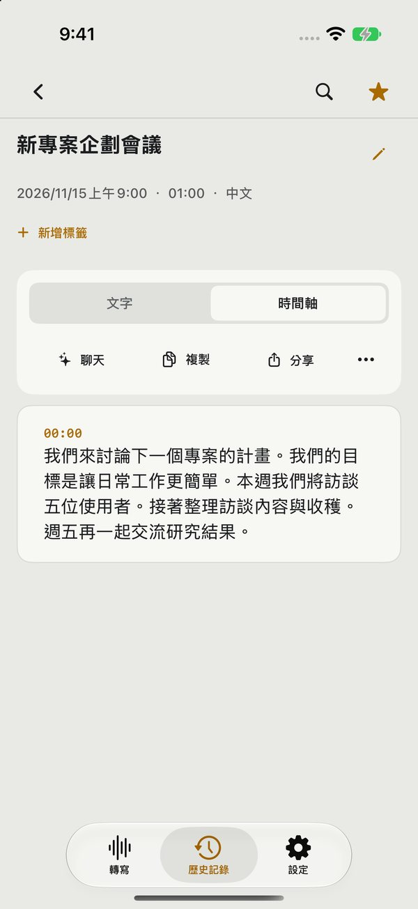
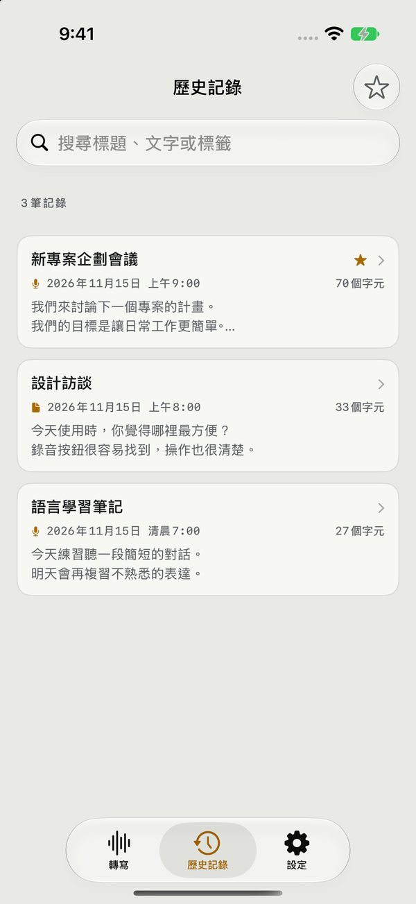
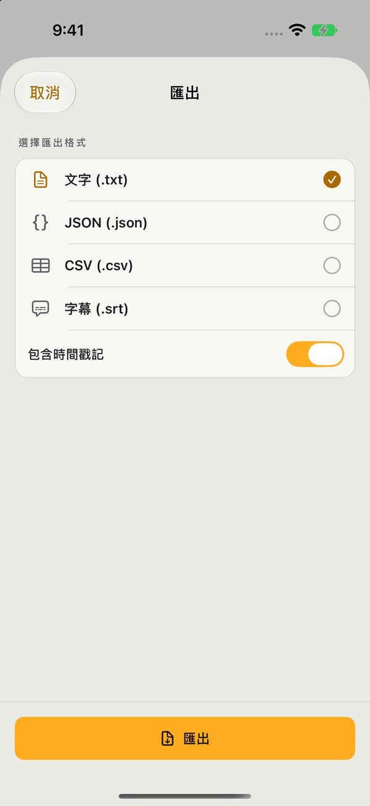

讓你的聲音，變成文字。
錄下會議、課堂或訪談，或匯入音訊、影片檔案，就能在 iPhone 或 iPad 上取得逐字稿。
在支援 iOS 26 或更新版本的裝置上，錄音時可即時顯示轉錄文字。 啟用 Apple Intelligence 後，可在轉錄記錄的聊天中要求 AI 摘要。
- 所有功能免費
- 沒有廣告
- 沒有 App 內購買
- 不需要帳號
- iPhone 與 iPad
所有功能，免費。
這裡沒有付費方案。本頁列出的所有內容，包括錄音、檔案匯入、全部 Whisper 模型、匯出、歷史記錄、標籤、Apple Intelligence 對話與「捷徑」，都可以免費使用。你不需要建立帳號，App 也不會顯示廣告。
- 沒有訂閱，也不需要一次性購買
- 沒有 App 內購買，也沒有鎖住的功能
- 沒有廣告，也沒有第三方追蹤
- 不需要註冊或登入
- App 不會限制錄音長度或檔案數量 — 但仍會受裝置儲存空間、記憶體與電池影響
從錄音到逐字稿
錄音或匯入
點一下就能用麥克風錄音，或從「檔案」或「照片」中選擇音訊、影片檔。錄音過程中可以暫停與繼續。
閱讀、編輯與匯出
對照時間戳記檢查文字、修正錯誤，再以 TXT、CSV、JSON 或 SRT 字幕格式分享。
你可以用它做什麼
進一步認識 App 的幾個主要部分。
直接錄音，或匯入自己的檔案
點一下就能開始錄音，也能匯入手邊已有的檔案。App 會轉換音訊，並在裝置上完成轉寫。
- 麥克風錄音支援暫停與繼續，還可切換至外部麥克風
- 在支援的 iPhone 上，可透過 Live Activity 在鎖定畫面與動態島查看錄音狀態
- 從「檔案」App 匯入 M4A、WAV、MP3、MP4、MOV 等音訊與影片
- 直接從「照片」圖庫挑選影片
- 長時間錄音時，可選擇開啟「保持螢幕常亮」
Whisper，在你的裝置上執行
App 透過 whisper.cpp 使用 OpenAI 公開釋出的 Whisper 模型，並在支援的裝置上使用 Metal GPU 加速。你可以選擇不同模型，在速度與準確度之間取捨。
- 10 種 Whisper 模型，從 Tiny（約 15 MB）到 Large v3 Turbo 與 Medium（最大約 1.5 GB）
- 自動偵測語言，或從 18 種語言中選擇
- 可選擇將結果翻譯成英文
- 可另外下載 Core ML 編碼器，在支援的裝置上可能加快處理速度
- 在 iOS 26 或以上版本，也可改用 Apple 的裝置端語音引擎

時間軸或閱讀檢視
可在簡潔的文字檢視與附時間戳記的時間軸之間切換。播放原始音訊確認說話內容，需要時再修改文字。
- 文字與時間軸檢視，可選擇顯示時間戳記
- 音訊播放，可調整速度與播放位置
- 編輯逐字稿與標題
- 複製單一段落或整篇文字
- 在逐字稿內搜尋

可搜尋的歷史記錄
每份逐字稿都會儲存在你的裝置上，方便日後隨時回來查看。
- 依標題、文字或標籤搜尋
- 我的最愛與排序
- 標籤可新增、重新命名、合併與刪除，並套用於所有逐字稿
- 依標籤篩選歷史記錄

文字、資料或字幕
依照後續用途選擇合適的格式分享逐字稿，無論是筆記、試算表、腳本或影片剪輯軟體。
- TXT 適合筆記與文件
- CSV 適合試算表
- 包含分段資訊的 JSON，方便搭配自己的工具
- SRT 字幕適合影片剪輯
- 將原始錄音以音訊檔分享
針對逐字稿提問 iOS 26+
在支援 Apple Intelligence 的裝置上，你可以與逐字稿對話，請它整理摘要、關鍵決策或待辦事項，也能自動產生標題。對話會依逐字稿分別儲存。較長的逐字稿會分段讀取。選用的 Private Cloud Compute 模式（iOS 27 或以上版本）預設為關閉。
「捷徑」與 Siri
透過 App 的「捷徑」動作，可以開始或停止錄音、轉寫媒體檔案、尋找逐字稿、取得逐字稿文字，或加上標籤與我的最愛，很適合搭配自動化流程。部分動作需要較新版本的 iOS。
所有功能，全部免費
以下是 App 目前提供的完整功能，全部都不需要付費。
錄製
- 麥克風錄音免費
- 暫停與繼續錄音錄音過程也會處理來電等中斷狀況免費
- 切換麥克風免費
- 錄音時顯示 Live Activity鎖定畫面與動態島免費
- 匯入音訊檔M4A、WAV、MP3 等常見格式免費
- 匯入影片檔MP4、MOV 等常見格式免費
- 從「照片」匯入影片免費
- 即時轉寫邊說邊顯示文字 · iOS 26+免費
語音辨識
- 裝置端 Whisper（whisper.cpp）免費
- 全部 10 種 Whisper 模型Tiny、Base、Small、Medium、Large v3 Turbo 與精簡版本免費
- Apple 裝置端語音引擎iOS 26+，語言由 iOS 管理免費
- 自動偵測或從 18 種語言中選擇免費
- 翻譯成英文免費
- Metal GPU 加速在支援的裝置上免費
- Core ML 編碼器（可選下載）免費
準確度與效能工具
- 略過無聲片段語音活動偵測（VAD）免費
- 音訊清理降噪與音量標準化免費
- 詞彙提示提示模型可能會出現的人名與專有名詞免費
- Flash Attention可能減少記憶體用量並加快處理速度免費
- 包含時間戳記免費
閱讀與編輯
- 文字檢視與時間軸檢視免費
- 音訊播放與速度控制免費
- 編輯逐字稿文字與標題免費
- 複製段落或全文免費
- 在逐字稿內搜尋免費
歷史記錄與整理
- 儲存轉寫歷史記錄免費
- 依標題、文字或標籤搜尋免費
- 我的最愛與排序免費
- 標籤：新增、重新命名、合併、刪除免費
- 依標籤篩選免費
匯出與分享
- 文字（.txt）免費
- CSV（.csv）免費
- JSON（.json）免費
- 字幕（.srt）免費
- 分享原始音訊免費
- 透過分享選單分享文字免費
Apple Intelligence
- 與逐字稿對話iOS 26+，需支援的裝置免費
- 依逐字稿分別儲存對話記錄免費
- 產生標題免費
- Private Cloud Compute 模式選用 · iOS 27+ · 預設關閉免費
自動化與 App
- 「捷徑」與 Siri 動作免費
- iPhone 與 iPad 版面免費
- 淺色、深色或系統外觀免費
- 介面提供 11 種語言免費
- 模型與儲存空間管理免費
標示 iOS 版本的功能，需要該版本或以上版本。Apple Intelligence 功能也會因裝置支援、地區與語言設定而異。
設計上讓音訊留在你的裝置上
Whisper 轉寫是在本機執行。App 不含廣告、分析 SDK 或第三方追蹤，也不會把你的音訊或逐字稿傳送給開發者。
留在你的裝置上
錄音、匯入的媒體、逐字稿、標籤、對話與設定都儲存在你裝置上的 App 內。你隨時可以在 App 中刪除。
App 連線的時機
從 Hugging Face 下載 Whisper、VAD 與 Core ML 模型檔案時；向 App Store 檢查是否有新版本時；以及 iOS 為 Apple 的語音引擎下載語音模型時。
由你決定
Apple Intelligence 的 Private Cloud Compute 預設為關閉。若你開啟此功能，逐字稿文字與你的問題會交由 Apple 的 Private Cloud Compute 處理。分享匯出內容時，檔案會傳送到你選擇的地方。
開始之前
裝置與系統
搭載 iOS / iPadOS 17.0 或以上版本的 iPhone 或 iPad。即時轉寫、Apple 的語音引擎與裝置端的 Apple Intelligence 需要 iOS 26 或以上版本；Private Cloud Compute 需要 iOS 27 或以上版本。
儲存空間與網路
下載模型需要網路連線與可用儲存空間（依模型不同，約 15 MB 到 1.5 GB）。錄音需要麥克風權限。
常見問題
App 真的免費嗎？
是的。目前所有功能都可以免費使用。沒有廣告、沒有 App 內購買、沒有訂閱，也不需要註冊帳號。
離線也能使用嗎？
Whisper 轉寫的設計是在你的裝置上執行。你需要連線一次以完成模型下載；之後使用該模型錄音與轉寫時，通常不需要網路連線。下載其他模型、檢查更新，以及選用的 Private Cloud Compute 模式則需要連線。
我的音訊會被傳送到伺服器嗎？
Whisper 轉寫在本機執行，App 不會把音訊或逐字稿傳送給開發者。唯一由你決定的例外，是選用的 Apple Intelligence 對話 Private Cloud Compute 模式，它會將逐字稿文字與你的問題傳送到 Apple 的 Private Cloud Compute。此模式預設為關閉。
可以匯入與匯出哪些檔案？
你可以從「檔案」匯入 M4A、WAV、MP3、MP4、MOV 等常見音訊與影片格式，也能從「照片」匯入影片。逐字稿可匯出為 TXT、CSV、JSON 或 SRT，錄音則可以音訊檔分享。
支援哪些語言？
轉寫時可以使用自動偵測，或選擇英文、日文、中文、韓文、西班牙文、法文、德文、義大利文、葡萄牙文、俄文、阿拉伯文、印地文、荷蘭文、波蘭文、土耳其文、越南文、泰文或印尼文。結果可能因語言而異。App 的介面提供 11 種語言。
可以為影片產生字幕嗎？
可以。匯入影片、完成轉寫後，匯出為 SRT 即可。大多數影片剪輯軟體都能匯入 SRT 檔案。字幕時間會依辨識出的段落安排，你可以在剪輯軟體中自行微調。
錄音可以多長？
App 沒有設定固定上限。實際上，超長音訊會受裝置可用儲存空間、記憶體與電池影響，而較大的模型也需要更長時間。如果長檔案處理失敗，改用較小的模型或開啟 Flash Attention 可能會有幫助。
這是 OpenAI 官方 App 嗎？
不是。這是一款獨立開發的 App，透過開源的 whisper.cpp 專案執行 OpenAI 公開釋出的 Whisper 模型。本 App 與 OpenAI 沒有隸屬關係，也未獲其背書。